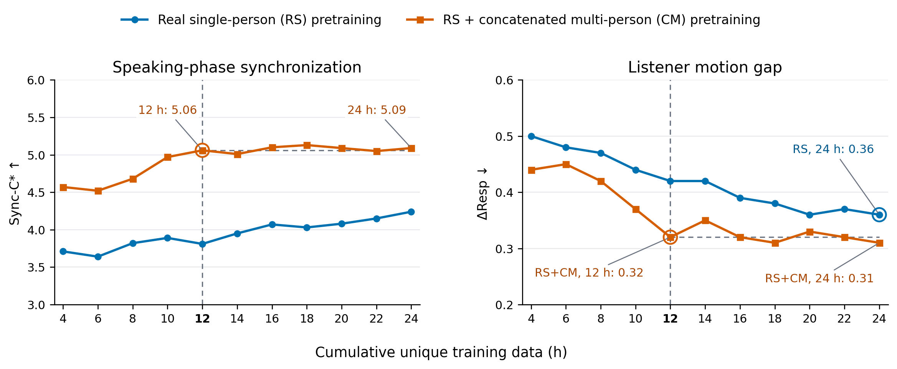

Loading review comments and evidence…
AnyTalker: Data-Efficient Scaling of Multi-Person Talking Video Generation
Loading review comments and evidence…
All configurations use the 1.3-billion-parameter (1.3B) backbone on the same 60 two-person, 20 three-person, and 20 four-person InteractivePerson inputs, with the paper’s phase-duration weighting.
Component comparisons use stage-1 models. The complete model additionally receives 12 h of real-conversation refinement. The Audio-Face Cross Attention (AFCA) ablation removes face-token concatenation while retaining per-identity audio attention, masks, and accumulation.
Concatenated multi-person (CM) clips pair two single-person videos. In table labels, “w/o” means “without”. Metrics are duration-weighted speaking-phase lip-synchronization confidence (Sync-C*, higher is better) and the listening-phase eye-motion gap to ground truth (ΔResp, lower is better).
1.3-billion-parameter (1.3B) backbone; two-, three-, and four-person InteractivePerson inputs. The two-person values reproduce the paper’s Table 3.
Real single-person (RS), concatenated multi-person (CM), and real multi-person (RM) data are compared. Here, CM pairs two single-person clips, and RM consists of real two-person conversations. Superscripts denote training stage; RM² uses 12 h / 50,000 refinement updates. Metrics are duration-weighted speaking-phase lip-synchronization confidence (Sync-C*, higher is better) and the listening-phase eye-motion gap to ground truth (ΔResp, lower is better).
Real single-person (RS) data and concatenated multi-person (CM) clips form the two pretraining strategies, RS and RS+CM. Each concatenated clip pairs two independent single-person videos with separate audio tracks. Metrics are duration-weighted speaking-phase lip-synchronization confidence (Sync-C*, higher is better) and the listening-phase eye-motion gap to ground truth (ΔResp, lower is better). Both initializations use the same 1.3-billion-parameter (1.3B) architecture and data subset at each size: 8 NVIDIA H200 accelerators, gradient accumulation 2, and global batch size 16. Evaluation uses the same 60 two-person inputs.
Each run starts from its stage-1 checkpoint and receives 5,000 refinement updates. Each data size uses the same subset for both initializations.
RS+CM with 24 h reaches 5.05 / 0.32 (Sync-C* / ΔResp). RS with 96 h reaches 4.96 / 0.32 under the same refinement budget.
Real single-person (RS) data and concatenated multi-person (CM) clips form the two pretraining strategies, RS and RS+CM. Each concatenated clip pairs two independent single-person videos with separate audio tracks. Metrics are duration-weighted speaking-phase lip-synchronization confidence (Sync-C*, higher is better) and the listening-phase eye-motion gap to ground truth (ΔResp, lower is better). Both 1.3-billion-parameter (1.3B) initializations follow the same training sample order through a 24-hour unique-video pool, with evaluation every 2 hours from 4 to 24 hours. Both runs use the same sampling seed; their samplers return identical training samples at every iteration. Evaluation uses the same 60 two-person inputs.

95% confidence intervals (CI) for AnyTalker-14B minus the comparator: MultiTalk for two people, Playmate2 for three and four. Metrics are duration-weighted speaking-phase lip-synchronization confidence (Sync-C*, higher is better) and the listening-phase eye-motion gap to ground truth (ΔResp, lower is better). Preference differences use percentage points (pp). Positive differences favor AnyTalker for Sync-C* and preference; negative differences favor AnyTalker for ΔResp.
We use 10,000 bootstrap replicates and the 2.5th and 97.5th percentiles. Objective metrics use paired input resampling within each person-count subset (60/20/20), retaining the paper’s phase-duration weights. Human preference uses independent resampling of raters and inputs, with each vote weighted by both sampling multiplicities. All originally shown methods remain in the preference denominator. Preference differences are in percentage points (pp).
We take 100 individual preference votes per person-count setting from the paper’s blinded study. A match occurs when the human-selected method has the lowest listening-phase eye-motion gap to ground truth (ΔResp) among the methods shown for that input. Different raters may evaluate the same input; tied metric minima count as matches.
The original study involved 25 non-author raters, hidden method names, and randomized presentation order. Two-person comparisons have four candidate methods; three- and four-person comparisons have two. Each selected vote contributes one match or non-match.
Original comment
OpenReview ↗